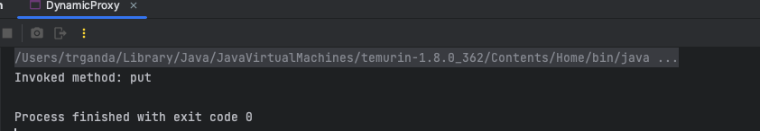

Java 动态代理是一种，运行时状态下，非侵入式的，对方法进行二次封装的技术。而所谓代理，是指对于原本要调用的方法，进行『隐藏』，可在调用真正的方法前/后进行代理，从而实现其它操作。例如，Benchmark 测试，功能拓展。动态代理被许多框架中广泛使用，如 Spring。
InvocationHandler
使用动态代理需要先实现 java.lang.reflect.InvocationHandler 接口
public class DynamicInvocationHandler implements InvocationHandler {
@Override
public Object invoke(Object proxy, Method method, Object[] args)
throws Throwable {
System.out.println("Invoked method: " + method.getName());
return 42;
}
}该接口提供一个 invoke 方法，当通过代理对象调用方法时，会转入该方法进行处理。
下面创建一个代理对象实例，借助 java.lang.reflect.Proxy 提供的工厂方法 newProxyInstance
Map proxyInstance = (Map) Proxy.newProxyInstance(
DynamicProxy.class.getClassLoader(),
new Class[] { Map.class },
new DynamicInvocationHandler());上面创建的代理对象，代理的是 Map 接口类型，之后可通过该对象正常调用 Map 接口中的方法。
proxyInstance.put("hello", "world");不过注意，刚刚创建的 DynamicInvocationHandler 并没有去包装需要被代理的对象，也没有真的执行 put 方法，只是记录了它而已。
运行一下，得到如下输出：

AnnotationInvocationHandler
在 CC1 - AnnotationInvocationHandler 中介绍过这个 AnnotationInvocationHandler 了，它就是一个实现了 InvocationHandler 接口动态代理 Handler。
并且通过成员 memberValues 来存储需要被代理类操作的对象。
private final Map<String, Object> memberValues;Timing Dynamic Proxy Example
下面是一个更具体的例子，通过动态代理，记录对象中方法的执行时间
public class TimingDynamicInvocationHandler implements InvocationHandler {
private static Logger LOGGER = LoggerFactory.getLogger(
TimingDynamicInvocationHandler.class);
private final Map<String, Method> methods = new HashMap<>();
private Object target;
public TimingDynamicInvocationHandler(Object target) {
this.target = target;
// get all methods of target
for(Method method: target.getClass().getDeclaredMethods()) {
this.methods.put(method.getName(), method);
}
}
@Override
public Object invoke(Object proxy, Method method, Object[] args)
throws Throwable {
long start = System.nanoTime();
// invoke the method and get the result
Object result = methods.get(method.getName()).invoke(target, args);
long elapsed = System.nanoTime() - start;
LOGGER.info("Executing {} finished in {} ns", method.getName(),
elapsed);
return result;
}
}在 TimingDynamicInvocationHandler 的构造方法中，首先获取传入对象的所有方法并记录下来。当通过代理调用方法时，会进入 invoke，在 invoke 方法中，首先根据传入的方法名称和参数，调用对应的方法，并记录执行所花费的时间
下面的示例，通过 TimingDynamicInvocationHandler 代理了 HashMap 和 String 的中的接口，Map 和 CharSequence。
Map mapProxyInstance = (Map) Proxy.newProxyInstance(
DynamicProxyTest.class.getClassLoader(), new Class[] { Map.class },
new TimingDynamicInvocationHandler(new HashMap<>()));
mapProxyInstance.put("hello", "world");
CharSequence csProxyInstance = (CharSequence) Proxy.newProxyInstance(
DynamicProxyTest.class.getClassLoader(),
new Class[] { CharSequence.class },
new TimingDynamicInvocationHandler("Hello World"));
csProxyInstance.length();